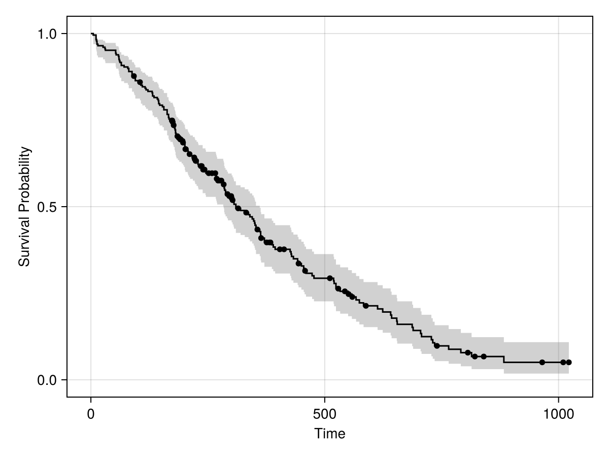
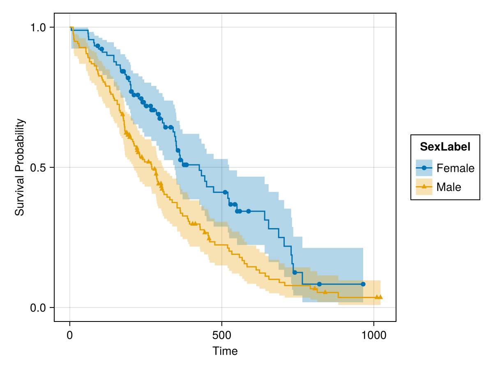
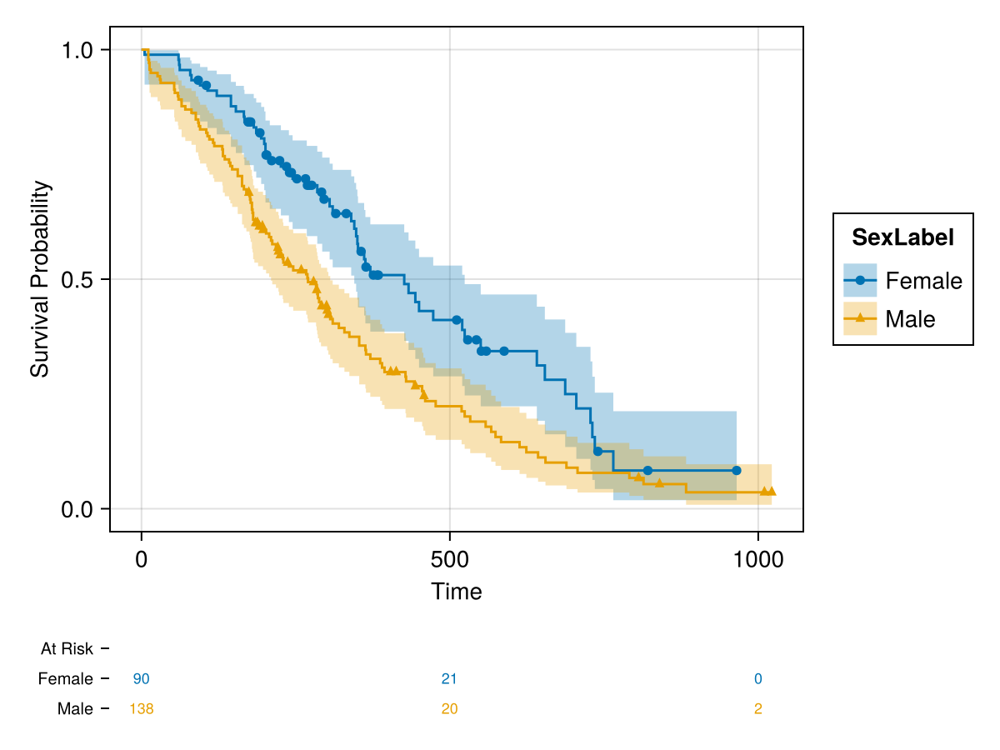
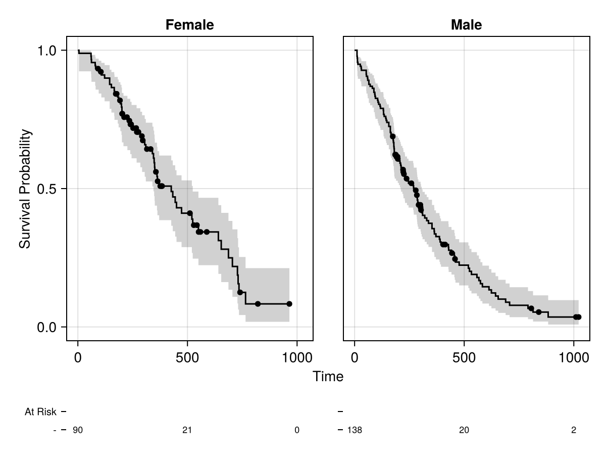
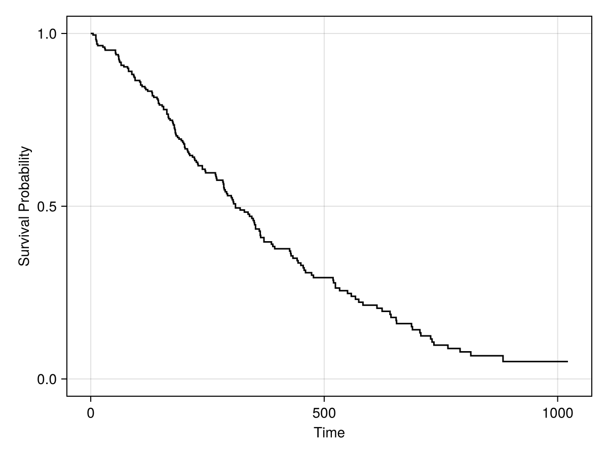

Kaplan-Meier Estimator
The Kaplan-Meier estimator is a nonparametric estimator of the survivor function, i.e. the probability of survival beyond a given time.
The estimate is given by
\[\hat{S}(t) = \prod_{i: t_i < t} \left( 1 - \frac{d_i}{n_i} \right)\]
where $d_i$ is the number of observed events at time $t_i$ and $n_i$ is the number of subjects at risk for the event just before time $t_i$.
The pointwise standard error of the log of the survivor function can be computed using Greenwood's formula:
\[\text{SE}(\log \hat{S}(t)) = \sqrt{\sum_{i: t_i < t} \frac{d_i}{n_i (n_i - d_i)}}\]
Plotting
Survival.jl provides an AlgebraOfGraphics.jl extension for creating Kaplan-Meier plots. The extension is loaded automatically when both Survival and AlgebraOfGraphics are available.
using Survival, AlgebraOfGraphics, CairoMakie, RDatasets
lung = dataset("survival", "lung")
lung.Event = lung.Status .== 2
lung.SexLabel = replace.(string.(lung.Sex), "1" => "Male", "2" => "Female")
first(lung, 5)| Row | Inst | Time | Status | Age | Sex | PhECOG | PhKarno | PatKarno | MealCal | WtLoss | Event | SexLabel |
|---|---|---|---|---|---|---|---|---|---|---|---|---|
| Int64? | Int64 | Int64 | Int64 | Int64 | Int64? | Int64? | Int64? | Int64? | Int64? | Bool | String | |
| 1 | 3 | 306 | 2 | 74 | 1 | 1 | 90 | 100 | 1175 | missing | true | Male |
| 2 | 3 | 455 | 2 | 68 | 1 | 0 | 90 | 90 | 1225 | 15 | true | Male |
| 3 | 3 | 1010 | 1 | 56 | 1 | 0 | 90 | 90 | missing | 15 | false | Male |
| 4 | 5 | 210 | 2 | 57 | 1 | 1 | 90 | 60 | 1150 | 11 | true | Male |
| 5 | 1 | 883 | 2 | 60 | 1 | 0 | 100 | 90 | missing | 0 | true | Male |
Basic Kaplan-Meier Plot
Map time and event indicator columns to the first two positional arguments of kaplanmeier():
plt = data(lung) * mapping("Time", "Event") * (kaplanmeier() + censorticks())
draw(plt)
Grouped Kaplan-Meier Plot
Use the color mapping to stratify by a grouping variable. The marker mapping is applied only to censorticks() so that the censor marks get group-specific marker shapes:
plt = data(lung) * mapping("Time", "Event", color="SexLabel") *
(kaplanmeier() + mapping(marker="SexLabel") * censorticks())
draw(plt)
Adding a Risk Table
Call add_risktable! on the result of draw() to add a number-at-risk table below the plot:
plt = data(lung) * mapping("Time", "Event", color="SexLabel") *
(kaplanmeier() + mapping(marker="SexLabel") * censorticks())
fg = draw(plt)
add_risktable!(fg)
fg
Faceted by Column
Use the col mapping to display groups in separate panels. add_risktable! works with faceted layouts as well:
plt = data(lung) * mapping("Time", "Event", col="SexLabel") *
(kaplanmeier() + censorticks())
fg = draw(plt)
add_risktable!(fg)
fg
Custom Confidence Level
Use the level keyword to change the confidence level (default 0.95):
plt = data(lung) * mapping("Time", "Event") * (kaplanmeier(level=0.9) + censorticks())
draw(plt)Without Confidence Interval
Pass interval=nothing to show only the survival curve:
plt = data(lung) * mapping("Time", "Event") * kaplanmeier(interval=nothing)
draw(plt)
API
Survival.KaplanMeier — Type
KaplanMeier{S,T}An immutable type containing survivor function estimates computed using the Kaplan-Meier method. The type has the following fields:
events: AnEventTablesummarizing the times and events used to compute the estimates. The time values are of typeT.survival: Estimate of the survival probability at each time. Values are of typeS.stderr: Standard error of the log survivor function at each time. Values are of typeS.
Use fit(KaplanMeier, ...) to compute the estimates as Float64 values and construct this type. Alternatively, fit(KaplanMeier{S}, ...) may be used to request a particular value type S for the estimates.
StatsAPI.fit — Method
fit(KaplanMeier, times, status) -> KaplanMeierGiven a vector of times to events and a corresponding vector of indicators that denote whether each time is an observed event or is right censored, compute the Kaplan-Meier estimate of the survivor function.
StatsAPI.fit — Method
fit(KaplanMeier, ets) -> KaplanMeierCompute the Kaplan-Meier estimate of the survivor function from a vector of EventTime values.
StatsAPI.confint — Method
confint(km::KaplanMeier; level=0.95)Compute the pointwise log-log transformed confidence intervals for the survivor function as a vector of tuples.
Survival.kaplanmeier — Function
kaplanmeier(; interval=:confidence, level=0.95)Compute a Kaplan-Meier survival estimate as an AlgebraOfGraphics transformation.
The first positional mapping should be time, the second the event indicator (0/1 or Bool).
Use interval=:confidence (default) for confidence bands, or interval=nothing for just the survival curve. The level keyword controls the confidence level (default 0.95).
Grouping (e.g. color=:treatment) is handled automatically by AlgebraOfGraphics.
Survival.censorticks — Function
censorticks()Mark censored observations on a Kaplan-Meier plot. Use as a separate layer combined with kaplanmeier():
plt = data(df) * mapping(:time, :event, color=:group, marker=:group) *
(kaplanmeier() + censorticks())Survival.risktable_at — Function
risktable_at(km::KaplanMeier, timepoints)Compute at-risk counts at specified time points from a KaplanMeier fit.
Survival.add_risktable! — Function
add_risktable!(fg)Add a risk table below a Kaplan-Meier plot. Call this on the result returned by draw(). Works with both single and faceted layouts.
References
Kaplan, E. L., and Meier, P. (1958). Nonparametric Estimation from Incomplete Observations. Journal of the American Statistical Association, 53(282), 457-481. doi:10.2307/2281868
Greenwood, M. (1926). A Report on the Natural Duration of Cancer. Reports on Public Health and Medical Subjects. London: Her Majesty's Stationery Office. 33, 1-26.